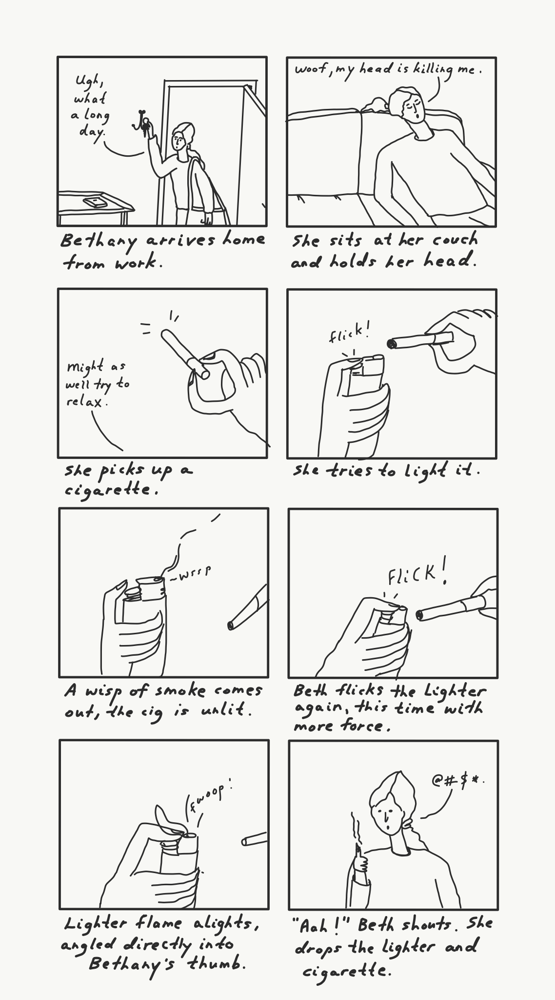

To find out, I observed three people using a lighter and asked them these basic questions:
My selection of users each had varying degrees of familiarlity with the product, making them a good representation of the general populace. My users expressed that they found the design somewhat intuitive and easy to grip, but that it took practice to actually be able to use it. Specifically, users with some prior experience all underestimated the number of attempts that they would take, and my user with no experience surrounding lighters was unable to light the flame after 6 attempts. Most of my users admitted that they had injured themselves at least once while using lighters.
I personally observed that most users had difficulty lighting the flame on their first try, regardless of their professed expertise. I saw that all of my users were able to easily grip the lighter, and everyone intuitively knew how to properly hold it. The technique for lighting the lighter, however, was observably not so intuitive.
I represented what I heard from the responses in the form of two personas, shown below using empathy maps. Here are Burnt Bethany and Cheap Charlie, two archetypal lighter users.
Burnt Becky is a working woman who is searching for a way to help her relax at the end of a long week. She likes cigarettes, but can't properly light a lighter. She usually takes Advil for her headaches, but lately they've been making her constipated, and she finds herself constantly stressed, even when she doesn't have deadlines to meet.
Cheap Charlie is a frugal college student who does not like to waste anything. He considers himself environmentally and socially conscious and often advocates for various social issues. He works a part-time job and budgets his finances by the week, never spending a cent above what he has allocated for himself.
Based on Burnt Bethany's empathy map, I created a storyboard depicting what might be her typical evening after work.
